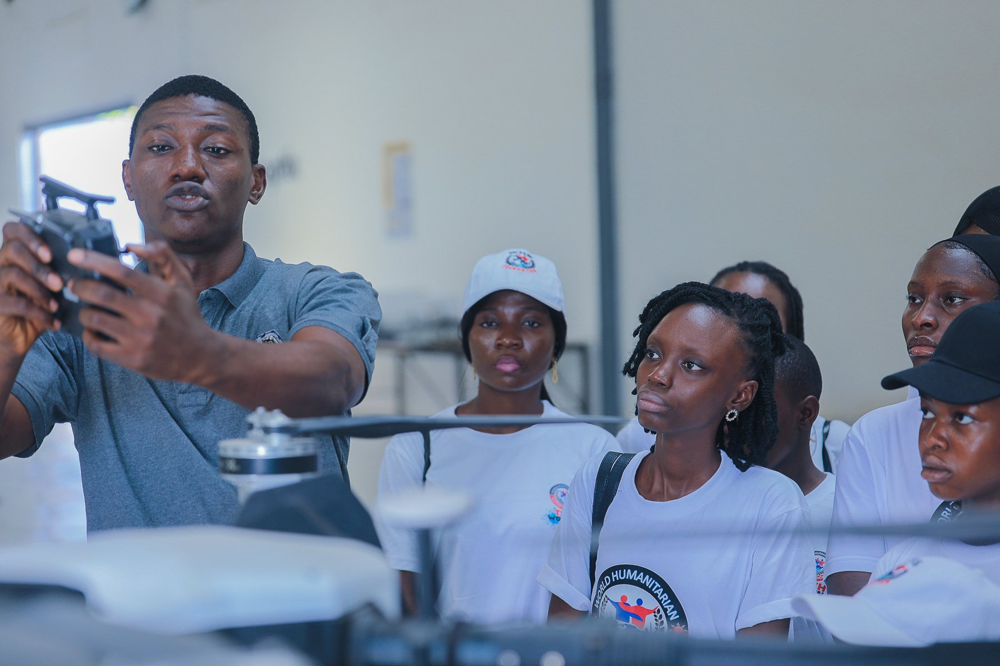
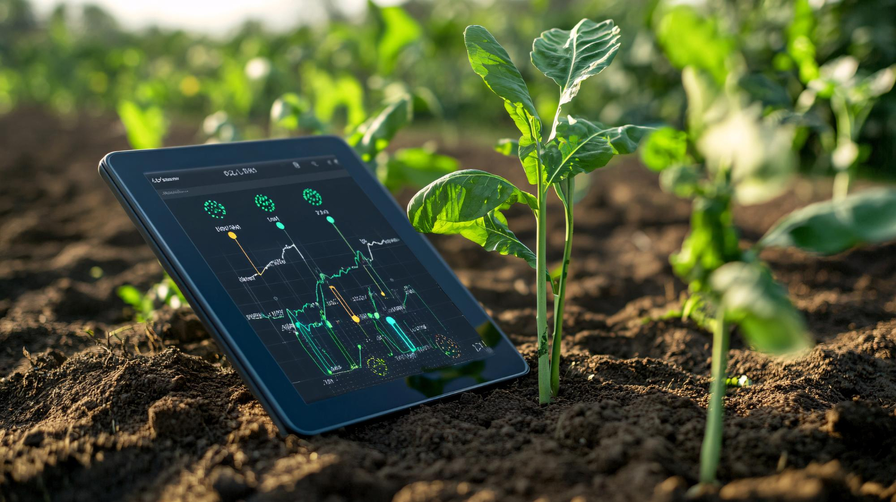
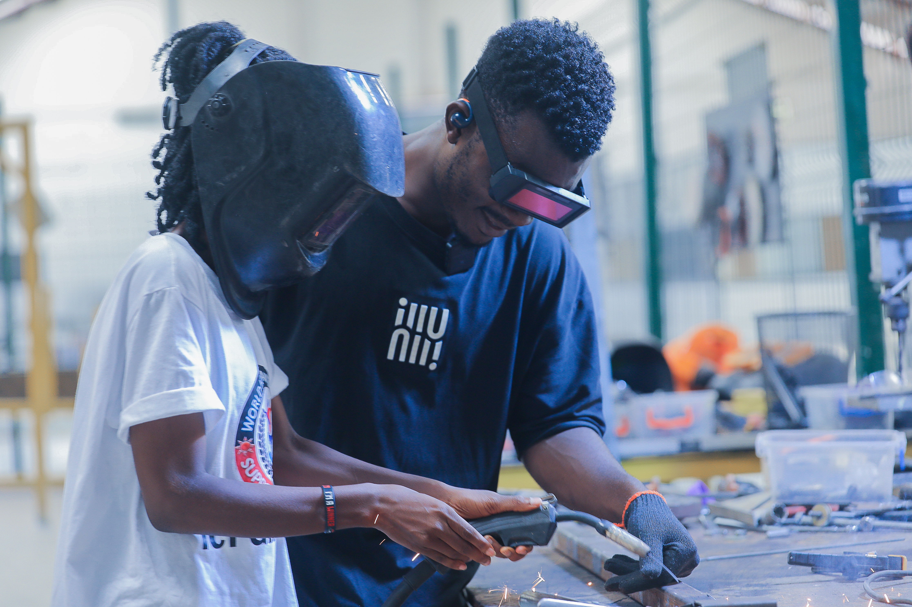

Digital Skills
Accessible digital literacy, e-learning and certificates that help learners participate with confidence.
Learn more →
WHSF equips girls, women, young people and underserved communities with digital skills, AI awareness, STEM education and responsible technology for a more inclusive and sustainable future.
What we do
Practical pathways connecting technology education with confidence, livelihoods and community resilience.
Accessible digital literacy, e-learning and certificates that help learners participate with confidence.
Learn more →
Responsible AI awareness and innovation pathways that prepare communities for a changing world.
Learn more →
Hands-on robotics, drones and engineering activities that build problem-solving confidence.
Learn more →
Career guidance, mentorship, professional skills and opportunity pathways for learners worldwide.
Learn more →
Applied technology and climate-smart learning supporting rural and peri-urban communities.
Learn more →Our impact
Explore WHSF

Filter published indicators and view aggregate project locations.
Open dashboard →
Read website announcements, programme developments and community stories.
Read updates →
See how WHSF approaches human oversight, privacy, fairness and safety.
Read the framework →Partners and collaborators


Your support helps bring technology, skills and opportunity to more communities.
Donate Now ♡Collaborate on programmes, technology access, evaluation and responsible innovation.
Become a Partner →Share your skills and time through mentoring, training and programme support.
Volunteer With Us →Follow verified programme news, impact evidence and public announcements.
Open Newsroom →